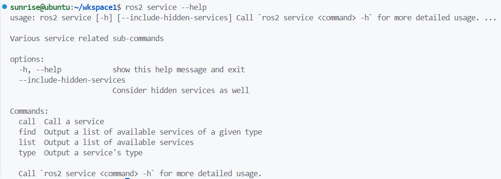
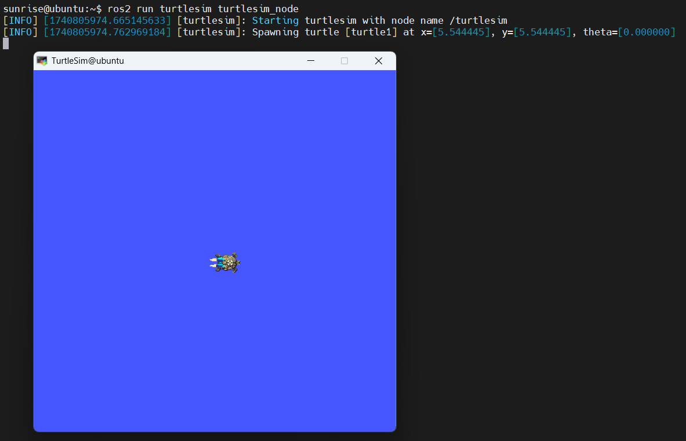
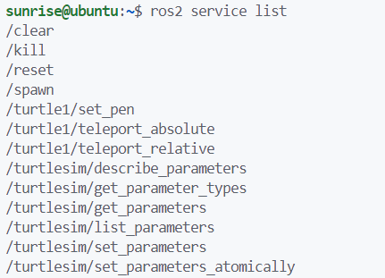
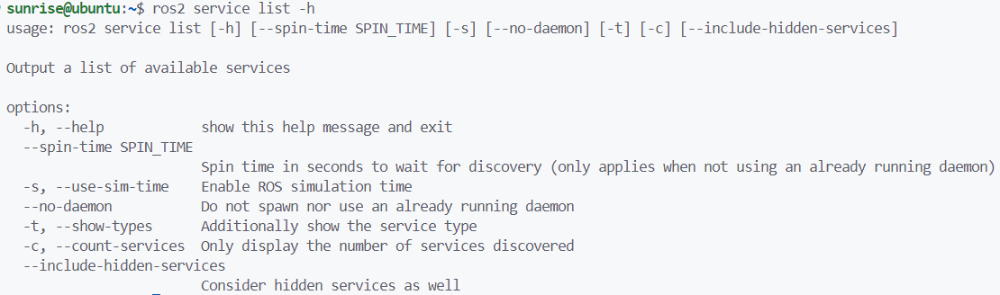
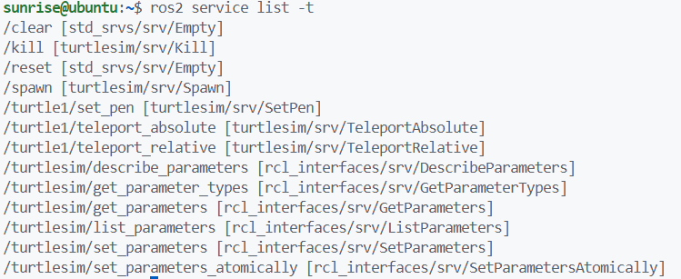
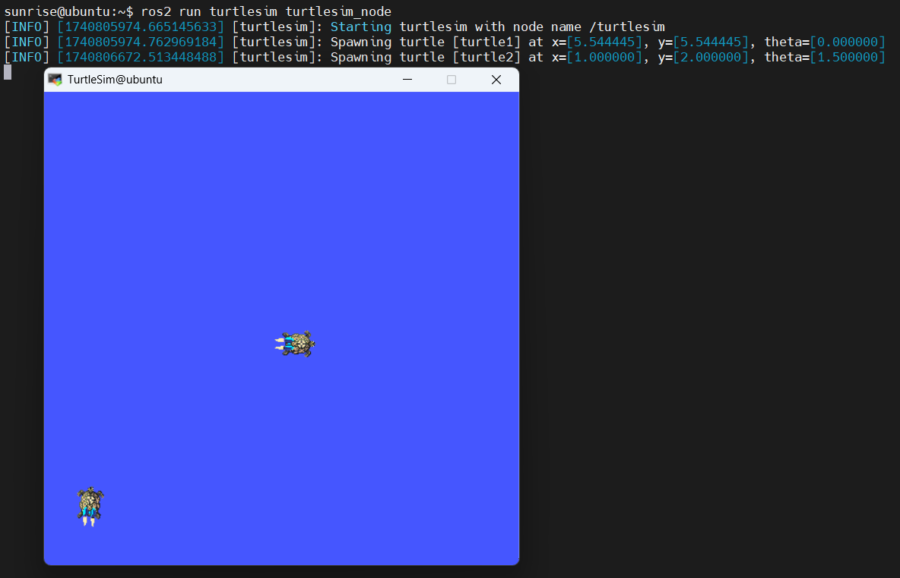
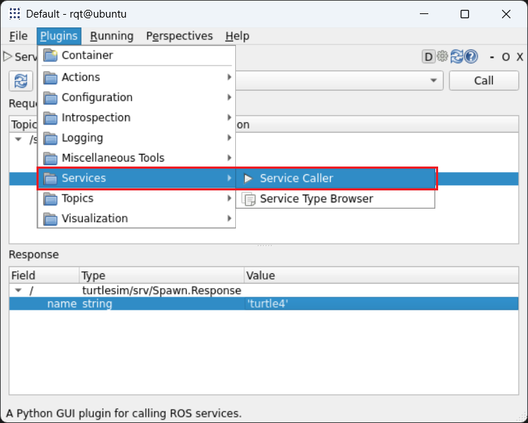
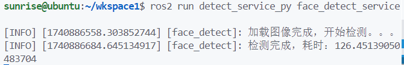
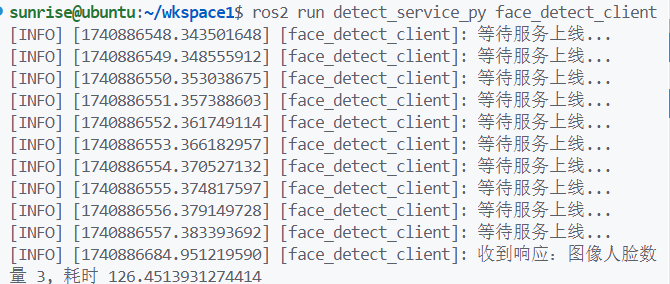
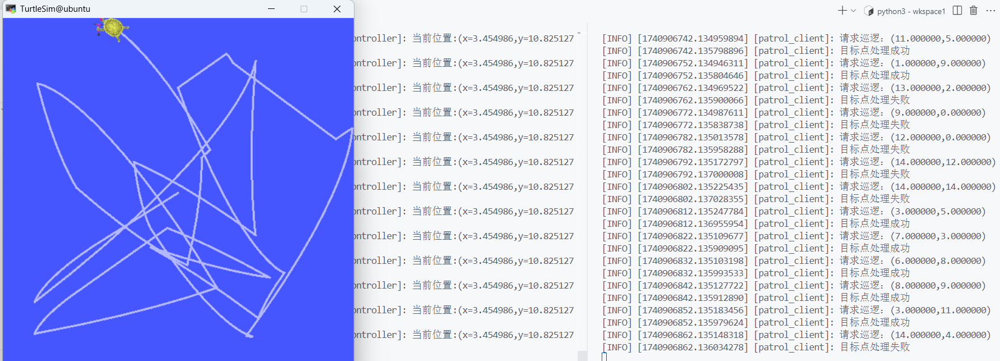

第六章 服务通信
6.1 服务通信¶
6.1.1 服务通信介绍¶
服务通信是以请求响应的方式实现不同节点之间数据传输的通信模式。发送请求数据的对象称为客户端，接收请求并发送响应的对象称之为服务端，同话题通信一样，客户端和服务端也通过话题相关联，不同的是服务通信的数据传输是双向交互式的。

服务通信中，服务端与客户端可以是一对多的关系，即同一服务话题下，存在多个客户端，每个客户端都可以向服务端发送请求。

6.1.2 服务通信指令¶
使用ros2 service --help可以查看 ROS2 与服务有关的命令行指令，我们后面会经常用到。

① 打开一个小海龟模拟器窗口

② 查询小海龟使用的服务

使用ros2 service list --help可以进一步查询可以参数指令


③ 查看服务的消息接口

Danger
服务的消息接口与话题不同，一个请求和一个响应两部分组成，在特别篇我们讲过。
④ 使用服务创建一只小乌龟
call指令的使用，自行使用--help查看。

⑤ rqt使用
rqt可视化配置服务


6.2 Python自定义服务消息接口¶
6.2.1 案例需求¶
- 服务端，进行人脸识别。
- 客户端，发送请求，带有图片信息。
6.2.2 自定义消息接口¶
添加sensor_msgs依赖，此接口有图像数据接口，以及必须的rosidl_default_generators依赖。
ros2 pkg create detect_interfaces --build-type ament_cmake --dependencies rosidl_default_generators sensor_msgs --license Apache-2.0
修改CMakeLists.txt，注册消息接口：
# 注册消息接口
rosidl_generate_interfaces(
${PROJECT_NAME}
"srv/FaceDetect.srv"
DEPENDENCIES sensor_msgs
)
在package.xml文件添加配置，声明该功能包为消息接口。
<license>Apache-2.0</license>
<member_of_group>rosidl_interface_packages</member_of_group>
<buildtool_depend>ament_cmake</buildtool_depend>
编译构建后，查看接口：
查看
6.2.3 功能包准备¶
安装python的人脸识别库
创建Python功能包
ros2 pkg create detect_service_py --build-type ament_python --dependencies rclpy detect_interfaces --license Apache-2.0
找一张人脸检测的照片，放在功能包的resource目录下，并在setup.py中添加配置信息。
data_files=[
('share/ament_index/resource_index/packages',
['resource/' + package_name]),
('share/' + package_name, ['package.xml']),
('share/' + package_name + "/resource", ['resource/pic1.jpg', 'resource/pic2.jpg'])
],
6.3 Python自定义接口示例¶
6.3.1 人脸检测示例¶
创建detect_demo.py文件
import face_recognition
import cv2
# 通过功能包的名字获取该功能包的安装目录，最终返回安装目录的share目录的绝对路径
from ament_index_python.packages import get_package_share_directory
def main():
img_path = get_package_share_directory("detect_service_py") + "/resource/pic1.jpg"
img = cv2.imread(img_path)
face_location = face_recognition.face_locations(
img,
number_of_times_to_upsample=1,
model='hog')
for top, right, bottom, left in face_location:
cv2.rectangle(img, (left, top), (right, bottom), color=(0, 255, 0), thickness=8)
cv2.imwrite("/home/sunrise/wkspace1/src/detect_service_py/resource/out2.jpg", img)
# cv2.imshow("img", img)
# cv2.waitKey(0)
编译脚本
6.3.2 服务端¶
import rclpy
from rclpy.node import Node
from detect_interfaces.srv import FaceDetect
from ament_index_python.packages import get_package_share_directory
import cv2
# ROS2提供，用于将OpenCV的图像格式转为ROS2格式
from cv_bridge import CvBridge
import face_recognition
import time
class FaceDetectService(Node):
def __init__(self, name):
super().__init__(name)
# 格式转换对象
self.bridge = CvBridge()
# 创建服务
self.service = self.create_service(FaceDetect, "/face_detect", self.srv_callback)
# 检测参数
self.upsample_times = 2
self.model = "hog"
# 默认图片
self.default_pic = get_package_share_directory("detect_service_py") + "/resource/pic1.jpg"
def srv_callback(self, request, response):
# 如果有数据
if request.image.data:
cv_image = self.bridge.imgmsg_to_cv2(request.image)
else:
self.get_logger().error("无图像加载")
cv_image = cv2.imread(self.default_pic)
start_time = time.time()
self.get_logger().info("加载图像完成，开始检测。。。")
face_locations = face_recognition.face_locations(
cv_image, number_of_times_to_upsample=self.upsample_times, model=self.model)
end_time = time.time()
self.get_logger().info(f"检测完成，耗时：{end_time-start_time}")
response.number = len(face_locations)
response.use_time = end_time-start_time
# 接收响应数据
for top, right, bottom, left in face_locations:
response.top.append(top)
response.right.append(right)
response.bottom.append(bottom)
response.left.append(left)
return response
def main(args=None):
rclpy.init(args=args)
node = FaceDetectService("face_detect")
rclpy.spin(node)
rclpy.shutdown()
6.3.3 客户端¶
import rclpy
from rclpy.node import Node
# ROS2自带图像消息接口
from sensor_msgs.msg import Image
from detect_interfaces.srv import FaceDetect
from ament_index_python.packages import get_package_share_directory
import cv2
# ROS2提供，用于将OpenCV的图像格式转为ROS2格式
from cv_bridge import CvBridge
class FaceDetectClient(Node):
def __init__(self, name):
super().__init__(name)
# 格式转换对象
self.bridge = CvBridge()
# 创建客户端
self.client = self.create_client(FaceDetect, "/face_detect")
# 图像路径
self.pic_path = get_package_share_directory("detect_service_py") + "/resource/pic1.jpg"
# 图像
self.pic = cv2.imread(self.pic_path)
def show_face_loactions(self, response):
for i in range(response.number):
top = response.top[i]
right = response.right[i]
bottom = response.bottom[i]
left = response.left[i]
cv2.rectangle(self.pic, (left, top), (right, bottom), (0, 0, 255), 6)
cv2.imwrite("/home/sunrise/wkspace1/src/detect_service_py/resource/outs.jpg", self.pic)
def send_request(self):
# 等待服务上线
while self.client.wait_for_service(timeout_sec=1) is False:
self.get_logger().info("等待服务上线...")
# 构造Request
request = FaceDetect.Request()
request.image = self.bridge.cv2_to_imgmsg(self.pic)
# 发送请求并等待服务端处理完成(异步获取结果)
future = self.client.call_async(request)
# 等待future为完成
rclpy.spin_until_future_complete(self, future=future)
# 得到响应数据
response = future.result()
self.get_logger().info(
f'收到响应：图像人脸数量 {response.number}, 耗时 {response.use_time}')
self.show_face_loactions(response)
def main(args=None):
rclpy.init(args=args)
node = FaceDetectClient("face_detect_client")
node.send_request()
rclpy.shutdown()
6.3.4 编译运行¶
entry_points={
'console_scripts': [
"detec_py = detect_service_py.detect_demo:main",
"face_detect_service = detect_service_py.detect_service:main",
"face_detect_client = detect_service_py.detect_client:main"
],
},
服务端

客户端

6.4 C++自定义服务消息接口¶
6.4.1 案例需求¶
- 服务端，通过话题控制小海龟运动，增加服务接收目标位置数据，移动至目标位置。
- 客户端，发送目标位置请求，并接受响应。
6.4.2 自定义消息接口¶
在python的detect_interfaces的srv目录下新建Patrol.srv接口文件：
float32 target_x # 目标x值
float32 target_y # 目标y值
---
int8 SUCCESS = 1 # 定义常量，表示成功
int8 FAIL = 0 # 定义常量，表示失败
int8 result # 处理结果
6.4.3 功能包准备¶
ros2 pkg create patrol_service_cpp --build-type ament_cmake --dependencies rclcpp detect_interfaces turtlesim --license Apache-2.0
6.5 C++自定义接口示例¶
6.5.1 服务端¶
关于/turtle1/cmd_vel和/turtle1/pose的消息接口，自行使用命令行查看。
#include "rclcpp/rclcpp.hpp"
// 小海龟 /turtle1/cmd_vel 话题(速度控制)消息接口
#include "geometry_msgs/msg/twist.hpp"
// 小海龟 /turtle1/pose 话题(位置、速度获取)消息接口
#include "turtlesim/msg/pose.hpp"
#include "detect_interfaces/srv/patrol.hpp"
using Patrol = detect_interfaces::srv::Patrol;
class TurtleController : public rclcpp::Node
{
public:
TurtleController() : Node("turtle_controller")
{
// 发布者，发布小海龟的线速度、角速度
velocity_publisher_ = this->create_publisher<geometry_msgs::msg::Twist>(
"/turtle1/cmd_vel", 10);
// 订阅者订阅小海龟的位置、线速度、角速度
pose_subscription_ = this->create_subscription<turtlesim::msg::Pose>(
"/turtle1/pose", 10,
std::bind(&TurtleController::on_pose_received_, this, std::placeholders::_1));
patrol_server_ = this->create_service<Patrol>(
"/patrol",
std::bind(&TurtleController::patrol_callback, this, std::placeholders::_1, std::placeholders::_2)
);
}
private:
/* 服务端回调函数 */
void patrol_callback(const Patrol::Request::SharedPtr request, const Patrol::Response::SharedPtr response)
{
// 判断请求的目标位置是否在0~13
if ((0 < request->target_x && request->target_x < 12.0f)
&& (0 < request->target_y && request->target_y < 12.0f)) {
// 设置目标值
target_x_ = request->target_x;
target_y_ = request->target_y;
// 返回成功
response->result = Patrol::Response::SUCCESS;
} else {
// 返回失败
response->result = Patrol::Response::FAIL;
}
}
void on_pose_received_(const turtlesim::msg::Pose::SharedPtr pose)
{
auto message = geometry_msgs::msg::Twist();
// 1.记录当前位置
double current_x = pose->x;
double current_y = pose->y;
RCLCPP_INFO(this->get_logger(), "当前位置:(x=%f,y=%f)", current_x, current_y);
// 2.计算距离目标的距离，与当前海龟朝向的角度差
// 勾股定理计算直线距离
double distance =
std::sqrt((target_x_ - current_x) * (target_x_ - current_x) +
(target_y_ - current_y) * (target_y_ - current_y));
// 目标方向的角度 - 当前朝向角度，得到夹角差
double angle =
std::atan2(target_y_ - current_y, target_x_ - current_x) - pose->theta;
// 3.控制策略：距离大于0.1继续运动，角度差大于0.2则原地旋转，否则直行
if (distance > 0.1) {
if(fabs(angle) > 0.2) {
// 以角度差的绝对值为角速度进行原地旋转
message.angular.z = fabs(angle);
} else {
// 通过比例控制器计算输出线速度
message.linear.x = k_ * distance;
}
}
// 4.限制最大值并发布消息
if (message.linear.x > max_speed_) {
message.linear.x = max_speed_;
}
velocity_publisher_->publish(message);
}
rclcpp::Subscription<turtlesim::msg::Pose>::SharedPtr pose_subscription_;
rclcpp::Publisher<geometry_msgs::msg::Twist>::SharedPtr velocity_publisher_;
rclcpp::Service<Patrol>::SharedPtr patrol_server_;
double target_x_{1.0}; // 目标位置X,设置默认值1.0
double target_y_{2.0}; // 目标位置Y,设置默认值1.0
double k_{1.0}; // 比例系数，控制输出=误差*比例系数
double max_speed_{3.0}; // 最大线速度，设置默认值3.0
};
int main(int argc, char* argv[])
{
rclcpp::init(argc, argv);
auto node = std::make_shared<TurtleController>();
rclcpp::spin(node);
rclcpp::shutdown();
return 0;
}
6.5.2 客户端¶
#include "rclcpp/rclcpp.hpp"
#include "detect_interfaces/srv/patrol.hpp"
using namespace std::chrono_literals;
using Patrol = detect_interfaces::srv::Patrol;
class PatrolClient : public rclcpp::Node
{
public:
PatrolClient(std::string name) : Node(name)
{
patrol_client_ = this->create_client<Patrol>("/patrol");
timer_ = this->create_wall_timer(10s, std::bind(&PatrolClient::timer_callback, this));
}
private:
void timer_callback(void)
{
while(!patrol_client_->wait_for_service(1s)) {
if (!rclcpp::ok()) {
RCLCPP_ERROR(this->get_logger(), "等待服务被打断。。。");
return;
} else {
RCLCPP_INFO(this->get_logger(), "等待服务上线。。。");
}
}
auto request = std::make_shared<Patrol::Request>();
request->target_x = rand()%15;
request->target_y = rand()%15;
RCLCPP_INFO(this->get_logger(), "请求巡逻：(%f,%f)", request->target_x, request->target_y);
// 异步发送请求
patrol_client_->async_send_request(
request,
// lamda表示式回调函数
[&](rclcpp::Client<Patrol>::SharedFuture result_future) -> void
{
auto response = result_future.get();
if (response->result == Patrol::Response::SUCCESS)
{
RCLCPP_INFO(this->get_logger(), "目标点处理成功");
}
else if (response->result == Patrol::Response::FAIL)
{
RCLCPP_INFO(this->get_logger(), "目标点处理失败");
}
});
}
private:
rclcpp::Client<Patrol>::SharedPtr patrol_client_;
rclcpp::TimerBase::SharedPtr timer_;
};
int main(int argc, char* argv[])
{
rclcpp::init(argc, argv);
auto node = std::make_shared<PatrolClient>("patrol_client");
rclcpp::spin(node);
rclcpp::shutdown();
return 0;
}
6.5.3 编译运行¶
在CMakeLists.txt文件添加配置信息
add_executable(patrol_service src/patrol_service.cpp)
add_executable(patrol_client src/patrol_client.cpp)
ament_target_dependencies(
patrol_service
"rclcpp"
"detect_interfaces"
"turtlesim"
)
ament_target_dependencies(
patrol_client
"rclcpp"
"detect_interfaces"
"turtlesim"
)
install(TARGETS
patrol_service
patrol_client
DESTINATION lib/${PROJECT_NAME}
)
编译
先打开小海龟，接着打开服务端，最后打开客户端，运行效果如下：
